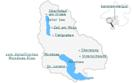
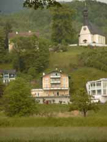
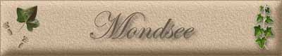

|
|
|
Wappen von Mondsee
Pfarrkirche St. Michel
Hilfbergkirche
3205 Einwohner,
Über den Dächern von Mondsee
 Karte Mondsee
 ehemalige Villa der Familie Reiffenstein
|

Der Mensch wurde in unserer Gegend in der Jungsteinzeit sesshaft. Reste von Siedlungen im Mondsee mit Funden von jungsteinzeitlicher Töpferei und Werkzeugen aus Stein und Knochen wurden von der Wissenschaft als Pfahlbaukultur gedeutet und nach der Hauptfundstelle "Mondseekultur" benannt, zeitlich begrenzt mit 3000-2200 v. Chr. Neuere Forschungen ergaben, dass es sich um ursprüngliche Landsiedlungen handelt, die durch Seespiegelanstieg unter Wasser gesetzt wurden. Funde (Grabsteine) und Grabungsergebnisse beweisen, dass in der Römerzeit 1./2. Jahrhundert n. Chr. hier eine Siedlung (ein römischer Gutshof) bestand. Eine Straße verband sie mit Juvavum, dem römischen Salzburg.
Um 600 Beginn der
bajuvarischen Besiedlung unserer Gegend.
Um 800 zählte Mondsee zu den hervorragendsten Klöstern Bayerns und erlebte einen ersten religiösen und kulturellen Höhepunkt. Bedeutende Werke entstanden in der Mondseer Schreibschule und Buchmalerei: Vor 788 war hier der Tassilopsalter (Psalter von Montpellier nach seinem heutigen Aufbewahrungsort genannt) entstanden - das älteste vollständig erhaltene Buch, das im Bereich Österreichs geschrieben wurde; kurz nach 800 entstand hier der "Mondseer Matthäus" - die älteste Übersetzung eines Bibelteiles ins Deutsche (ahd.), aufbewahrt in der Nationalbibliothek Wien. 829 erhielt das Kloster Mondsee mit dem späteren St. Wolfgangland die wertvollste Schenkung. 831 übergab Ludwig der Fromme im Tausch gegen Obermünster das Kloster Mondsee dem Hochstift Regensburg. Damit verlor es seine Selbständigkeit. Die Bischöfe von Regensburg wurden Herren von Mondsee.
976 weilte der Hl. Wolfgang, Bischof von Regensburg annähernd ein Jahr im Kloster Mondsee, um kriegerischen Wirren auszuweichen. Er gründete in dieser Zeit die Kirche am Abersee, die später nach ihm seinen Namen erhielt. Als Wallfahrtsstätte war St. Wolfgang durch Jahrhunderte eine Haupteinnahmequelle des Klosters.
1142 erreichte das Kloster unter Abt Konrad II. wieder seine Selbständigkeit. Neben klösterlichen Reformen sorgte er für die Rückgabe von Gütern, die verloren gegangen waren. Das schuf ihm Feinde und führte 1145 zu seiner Ermordung. Abt Konrad II. genießt im Mondseeland seit Jahrhunderten große Verehrung.
13.u.14. Jahrhundert: unruhige Zeiten für das Kloster - kriegerische Wirren, Zerstörungen und Brände. 15. u. Anfang 16. Jahrhundert neue Blütezeit des Klosters: rege Bautätigkeit, Entstehung der gotischen Klosterkirche, Pflege der Künste und Wissenschaften; Entstehung namhafter Werke der Malerei: Bildtafeln des "Meisters von Mondsee", die Zeichnung "Mondsee mit dem Schafberg" und Fresken an der Hochkreuzkapelle von Wolf Huber, die "Mondsee Siegel" von Albrecht Altdorfer; Michael Pacher erhält im Kloster den Auftrag für den Flügelaltar in St. Wolfgang. 1506 Nach rund 800 Jahren Zugehörigkeit zu Bayern erwirbt Kaiser Maximilian I. das Mondseeland für Österreich. Besuch des Kaisers in Mondsee.
1514 gründete Abt Wolfgang Haberl das Klostergymnasium
- das älteste Gymnasium in den Grenzen des heutigen Oberösterreich.
1601-1662 "Wildenecker Aufruhr"; die Burg Wildeneck auf dem
Kolomansberg hatte die Vogtei über das Mondseeland; drückende Lasten
(Robot und Zehent) für die Bauern führten zu Unruhen, die Todesurteile und
Verbannungen zur Folge hatten.
18. Jahrhundert: Das Kloster erlebte seinen letzten Höhepunkt unter Abt Bernhard Lidl (1727-73) mit der Tausendjahrfeier 1748, die er mit einer umfangreichen Bautätigkeit an. Kirche und Kloster verband. Die Geschichte des Klosters von den Anfängen bis in das 18.Jahrhundert fasste er im "Chronicon Lunaelacense" zusammen.
1774 legte der große Marktbrand fast den gesamten Ort
in Schutt und Asche und beschädigte auch das Kloster schwer.
1810 wurde Carl Philipp v. Wrede für seine Verdienste in Feldzügen mit Napoleon in den französischen Grafenstand erhoben und erhielt das aufgelassene Kloster Mondsee (neben Suben und Gleink). Damit war aus dem Kloster das Schloss mit Herrschaftsbereich geworden. 1814 wurde er zum bayerischen Feldmarschall ernannt und in den Fürstenstand erhoben. Mondsee verdankt ihm die Förderung der Landwirtschaft, den Beginn der Erzeugung des "Mondseer Käse", die Verbesserung der Verkehrsverhältnisse durch Straßenbau und umfangreiche bauliche Maßnahmen. 1838 starb Marschall v. Wrede in Ellingen. 1867 Beginn des Fremdenverkehrs in Mondsee unter Bürgermeister Peter Tafner.
1872 beginnt die Dampfschifffahrt auf dem Mondsee
(Schiff "Ida").
1904 wurde eine elektrische Straßenbeleuchtung
errichtet.
|